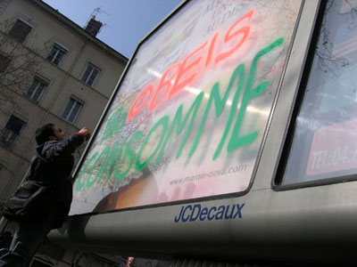

| |
Site dédié à la publication d'informations communiquées par le Collectif des déboulonneurs. En aucun cas ce site n'appelle à des actions illégales. | |
 |
||
|
Accueil du site > Lyon > Mais que fait la police ?
Samedi 25 février, une quinzaine de personnes a participé au barbouillage d’un gros panneau publicitaire moche et déroulant JC Decaux. Attendue sur les lieux du méfait par les barbouilleurs prêts à répondre de leur acte de désobéissance civique, la police n’est pas venue. Ce n’est que partie remise ! Lyon froid et ensoleillé, un samedi en plein milieu des vacances. Vers 11h, un joyeux collectif d’une quinzaine de déboulonneuses et déboulonneurs se retrouve sur la place du grand pont, près du métro guillotière. Certains sont venus à pied, d’autres à vélo ou à vélo’v. Un escabeau est déplié, on sort la peinture et de la documentation. En quelques minutes, l’énorme panneau qui s’interpose sur cette place populaire est barbouillé en multicolor. Juché sur un tabouret, l’un d’entre nous explique le sens de l’action. "Nous manifestons notre refus de l’invasion publicitaire. Machine à consommer, à fruster, la publicité nous vole nos rêves et nos désirs, nous dicte ce que nous devons acheter, ce que nous devons faire. Il est temps de désobéir !" Il est chaudement applaudi. Pendant ce temps, sur le panneau 4x3, les pages de pub défilent. Deux mots restent : "Obéis, Consomme" L’action est souriante et joyeuse. Des passants nous ignorent, tandis que d’autres, intrigués, s’arrêtent et discutent. Qui n’a pas remarqué la prolifération des sucettes et d’autres espaces publicitaires à Lyon depuis quelques mois ? Les obstacles urbains de JCDecaux prolifèrent sans modération. La pub nous colonise avec l’assentiment des pouvoirs publics. 50 x 70 ! Nous proposons de nous battre pour un objectif réalisable : 50x70cm devrait être la taille maximale autorisée pour tout affichage publicitaire. C’est largement suffisant pour passer toute information, commerciale ou non. Et le nombre de panneaux devrait être limité proportionnellement au nombre d’habitant. Déboulonnage de tous les autres panneaux ! 
Parmi les déboulonneuses-déboulonneurs, nombreux sont ceux qui enfourchent de temps en temps un vélo’v, l’un de ces vélos en libre-service mis à disposition par l’afficheur publicitaire JCDecaux en l’échange d’un juteux contrat avec le Grand Lyon. L’augmentation des déplacements à vélo permet une réduction du trafic automobile et donc de la pollution atmosphérique, et tout ça avec plus de convivialité et de santé. Comment ne pas l’adopter ? Mais pourquoi devrait-on avaler, en échange, l’augmentation de 40% de l’espace publicitaire dans la ville, l’installation de dizaines de sucettes supplémentaires et le remplacement de tous les abribus par des abripubs ? Sur le site "mobilier urbain" de JCDecaux, on apprend que "les actifs passent en moyenne 8h20 hors de leur domicile, soit 52 minutes de plus qu’il y a 6 ans" ! L’affichage publicitaire urbain a donc gagné sur la télé presque une heure de temps de cerveau disponible par jour ! Désobéissons. Ne serait-ce qu’en prenant 1 minute par jour à se demander pourquoi on devrait obéir aux injonctions publiciaires, en venant soutenir les barbouilleurs non-violents pour leurs prochaines actions, en barbouillant soi-même un panneau de façon non-violente et assumée... Samedi, sur cette place passante surveillée en permanence par des caméras de vidéocontrôle, les barbouilleurs assument publiquement leur geste de désobéissance. A midi, une heure a passé depuis le début du barbouillage. Tout le monde est encore là, les journalistes venus en nombre, les passants, les amis. La police, elle, n’est pas venue constater le barbouillage. Nous devrons donc recommencer. Rendez-vous à la prochaine action, le vendredi 24 mars prochain. Soutenons les déboulonneurs, désobéissons à la publicité ! Action non-violente = force Cet article est à lire sur le site http://rebellyon.info D’autres photos dans notre galerie |
|
Site utilisant SPIP - Hébergement Ouvaton
|